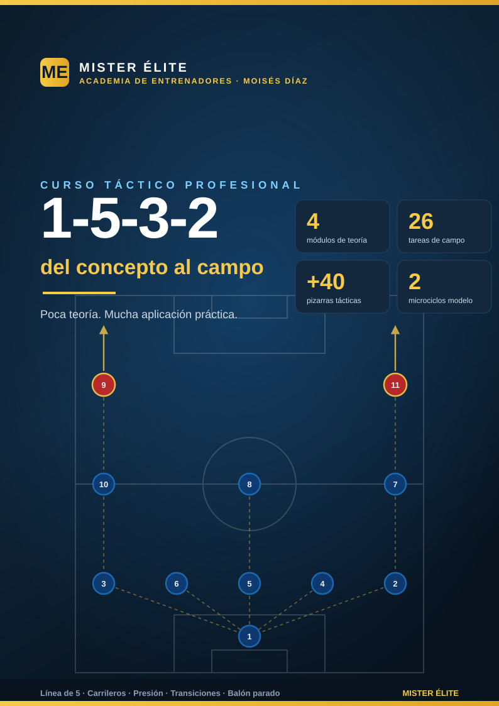

Sistema 1-5-3-2: del concepto al campo
Curso táctico — MISTER ÉLITE · Moisés Díaz
Un curso práctico para entrenar el sistema de los carrileros: tres centrales, dos carrileros que recorren toda la banda, un medio de tres y dos puntas. Poca teoría, mucha aplicación. La meta no es saber qué es un 1-5-3-2, sino saber entrenarlo y verlo funcionar en el campo.
Idea fuerza del curso: el 1-5-3-2 defiende estrecho y compacto, y ataca ancho y largo. El interruptor entre los dos estados son los carrileros: con balón el equipo es un 1-3-5-2; sin balón, un 1-5-3-2.
¿A quién va dirigido?
A entrenadores de fútbol 11 (formativo avanzado, amateur, juvenil-sénior y competición) que quieran:
- Implantar el 1-5-3-2 / 3-5-2 desde cero o pulir uno ya en marcha.
- Entender la doble función de los carrileros y entrenarla con tareas reales.
- Disponer de un banco de tareas de campo listo para llevar al entrenamiento, con provocaciones medibles.
No hace falta un nivel previo alto: cada módulo de teoría es breve y cada tarea está descrita para ejecutarse tal cual, con sus reglas, variantes y puntos de coaching.
Objetivos del curso
Al terminar, el entrenador será capaz de:
- Explicar y dibujar la estructura del 1-5-3-2 y su mutación a 1-3-5-2.
- Entrenar la salida de balón con 3 centrales + pivote aprovechando la superioridad numérica.
- Construir la línea de 5 sin balón: bajada de carrileros, basculación, coberturas y fuera de juego.
- Implantar el pressing de los 2 DC y el gatillo del carrilero con su cobertura en cadena.
- Explotar la doble función de los carrileros (defender el carril 1v1 ↔ dar amplitud y centrar).
- Generar gol sin extremos: pareja de delanteros, llegada de interiores y centros de carrileros.
- Resolver las transiciones (recomponer la línea de 5; atacar la profundidad) y el balón parado.
Cómo está organizado
El curso tiene dos mitades: teoría concisa (4 módulos) y práctica (el corazón: 7 archivos de ejercicios con 26 tareas + un plan de sesiones). Cada módulo termina con Ideas clave y Errores comunes. Cada tarea sigue una ficha uniforme.
Módulos de teoría
| # | Módulo | Contenido |
|---|---|---|
| 01 | Fundamentos y estructura | Línea de 5 + medio de 3 + 2 puntas, doble función de carrileros, variantes, ventajas/desventajas, perfiles. |
| 02 | Fase defensiva | Roles, paso de 3 a 5, bloques, pressing con gatillo, basculación, el problema de la amplitud. |
| 03 | Fase ofensiva | Salida con 3 + pivote, construcción y mutación a 1-3-5-2, último tercio, automatismos. |
| 04 | Transiciones y balón parado | Transición A-D y D-A, contrapresión, ABP a favor y en contra. |
Ejercicios (el corazón del curso)
| Archivo | Bloque | Tareas |
|---|---|---|
| Plan de sesiones | 2 microciclos ejemplo | — |
| Bloque 1 · Salida de balón | Salida con 3 centrales + pivote | T1–T4 |
| Bloque 2 · Línea de 5 | Organización y basculación de la línea de 5 + medio de 3 | T5–T9 |
| Bloque 3 · Pressing | Press de los 2 DC y gatillo del carrilero | T10–T13 |
| Bloque 4 · Carrileros | Doble función de los carrileros (bloque central) | T14–T18 |
| Bloque 5 · Delanteros e interiores | Juego de los 2 delanteros + llegada de interiores | T19–T22 |
| Bloque 6 · Transiciones y partido | Transiciones (A-D y D-A) y partido condicionado | T23–T26 |
Recursos
- Índice de diagramas (PEDIDOS) — qué muestra cada pizarra del curso.
Convención de dorsales (única para todo el curso)
Estructura: portero + 5 defensas (3 centrales + 2 carrileros) + 3 medios (1 pivote + 2 interiores) + 2 puntas. Esta nomenclatura es la misma en módulos, ejercicios y pizarras. No hay extremos: la amplitud la dan siempre los carrileros.
| Dorsal | Posición | Abrev. | Matiz de rol |
|---|---|---|---|
| 1 | Portero | POR | Hombre libre / portero-líbero, manda la línea de 3 |
| 2 | Carrilero derecho | CAR | Recorre toda la banda derecha: defiende y da amplitud en ataque |
| 3 | Carrilero izquierdo | CAR | Recorre toda la banda izquierda: defiende y da amplitud en ataque |
| 4 | Central derecho | DFC | Marca/cobertura; sale a presionar por su lado |
| 5 | Central / líbero | DFC | El central del medio: organiza la línea de 3, líbero/coberturas |
| 6 | Central izquierdo | DFC | Marca/cobertura; sale a presionar por su lado |
| 7 | Interior derecho | MC | Box-to-box: ayuda a defender el carril y llega al área |
| 8 | Mediocentro / pivote | MC | Ancla posicional por delante de los 3 centrales |
| 10 | Interior izquierdo / media punta | MC | El más creativo: recibe entre líneas y asocia con los 2 DC |
| 9 | Delantero centro | DC | Referencia / pivote ofensivo |
| 11 | Segundo delantero | DC | Móvil / de ruptura |
Notas fijas de nomenclatura:
- Carrileros (CAR) = los 2 jugadores de banda (wing-backs). Clave del sistema: anchura en ataque y línea de 5 en defensa. No son extremos ni laterales puros.
- Línea de 3 centrales (DFC ×3): uno por el centro (5, líbero/organizador) y dos por los lados (4 y 6).
- Medio de 3: pivote (8) + interiores (7 derecho, 10 izquierdo).
- En el plan de sesiones,
MD= matchday (MD-4 … MD), nunca una posición. - Cuando una tarea numera piezas iguales usa DFC1/DFC2/DFC3, CAR-D/CAR-I, DC1/DC2 para distinguirlas.
Distancias de referencia (estándar del curso)
Valores orientativos para entrenar la compacidad. Regla de oro: mínima distancia entre líneas y entre jugadores para que el rival no juegue cómodo entre líneas.
| Magnitud | Referencia | Rango operativo |
|---|---|---|
| Entre líneas (5 ↔ 3 ↔ 2 DC) | 10–12 m | 8–15 m según altura del bloque (8–12 bajo, 10–12 alto, hasta 15 medio) |
| Entre centrales adyacentes | 8–10 m | la línea de 3 abarca ~18–22 m |
| Profundidad total del bloque | 30–35 m (bloque medio) | hasta ~25 m comprimido en bloque bajo |
| Anchura con balón | ~64–68 m (todo el ancho) | la dan los carrileros pegados a la cal |
| Altura de la línea defensiva | alto 45–55 m · medio 30–40 m · bajo 18–25 m | referida a la última línea |
Leyenda de símbolos de las pizarras
| Símbolo | Significado |
|---|---|
| Círculo con dorsal (azul) | Jugador propio (POR 1, CAR 2/3, DFC 4/5/6, MC 7/8/10, DC 9/11) |
| Círculo con dorsal (rojo) | Jugador rival |
| Flecha continua → | Conducción / desplazamiento del jugador con balón |
| Flecha discontinua ⇢ | Trayectoria de pase del balón |
| Flecha ondulada 〰️→ | Carrera/desmarque sin balón |
| Zona sombreada | Espacio a ocupar, cubrir o vigilar (carril, franja entrelíneas, zona-meta) |
| Cono / línea de cal | Carriles, zonas-meta, franjas de tarea |
| Portería / mini-portería | Objetivo de finalización o de superación |
Glosario
- Carrilero (CAR): jugador de banda del sistema; defiende el carril en la línea de 5 y da amplitud/centra en ataque. La pieza clave.
- Líbero / central organizador (5): el central del medio; no salta, cubre, manda la línea y sale jugando.
- Doble función: la transformación 1-5-3-2 (sin balón) ↔ 1-3-5-2 (con balón) que ejecutan los carrileros al bajar/subir.
- Gatillo del carrilero: salto del carrilero desde la línea hasta la banda para presionar al hombre de banda rival; activa una cobertura en cadena.
- Cobertura en cadena: secuencia de ajustes cuando alguien salta (interior baja, central desliza, línea pasa a 4 temporal, carrilero del lado débil pinza).
- Hombre libre / superioridad de 3 centrales: con 3 DFC ante 2 puntas siempre hay marca + cobertura + un central libre (3v2).
- Medio espacio: corredor entre el carril central y el de banda; zona de oro para la recepción de los interiores.
- Basculación: desplazamiento del bloque hacia el lado del balón; el carrilero del lado débil pinza hacia dentro.
- Provocación: regla artificial de una tarea que penaliza el comportamiento incorrecto y premia el propio del sistema. Corazón metodológico del banco.
- Bloque (alto/medio/bajo): altura de la línea defensiva y zona donde se inicia la presión.
- Categorías de tarea: F = formativo (sub-12 a sub-16), A = amateur/juvenil-sénior aficionado, S = sénior/competición.
Curso "Sistema 1-5-3-2: del concepto al campo" · MISTER ÉLITE — Moisés Díaz · poca teoría, mucha práctica.